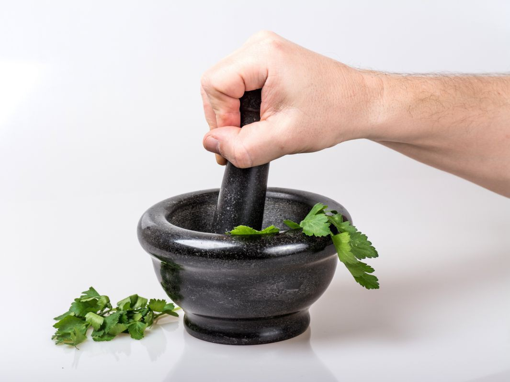
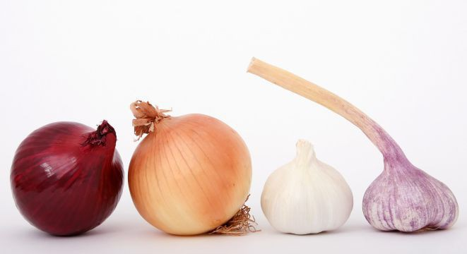

Le feuilleton de l'été : les recettes santé et bien-être du potager (épisode 1)
Le jardin potager représente une ressource incroyable pour soigner les petits bobos de l'été. Parce qu'il existe une multitude de recettes pour améliorer sa santé et son bien-être grâce à l'action bienfaisante des fruits, légumes, fleurs et aromates (évidemment biologiques). Seules celles qui sont faciles à réaliser ont été listées.
Nous commençons logiquement ce feuilleton alphabétique avec l’épisode 1 : les recettes allant de l’ail au chou.
Définitions :

AIL
En utilisation interne :
- circulation, métabolisme des lipides, antihypertenseur, anticholestérolémiant, anticoagulant.
- Troubles gastro-intestinaux
- Problèmes respiratoires
- Effet antioxydant (contre le vieillissement cellulaire)
En utilisation externe :
- Antidouleur (douleurs articulaires, musculaires et névralgiques)
- Action contre certaines affections de la peau : infections, verrues, cors.
Quelques recettes :
- pour désinfecter les plaies : faites macérer pendant 10 jours 6 gousses d’ail pilées dans 1l de vinaigre d’alcool
- pour faire baisser la tension : faites macérer toute la nuit une gousse d’ail écrasé dans un verre d’eau ; à boire le matin à jeun.
- contre le rhume de cerveau : respirez plusieurs fois par jours de l’ail écrasé
- pour faciliter la digestion et limiter les gaz intestinaux : infusez 5 à 10g d’ail écrasé ; boire 1 tasse après le repas
- contre les vers intestinaux : laissez cuire 25 g d’ail dans un verre d’eau ou de lait ; à boire 2 fois par jour (ma grand mère disait que “l’ail tue les petits enfants qui ont des vers”)
- contre les affections pulmonaires : versez 250 g d’eau bouillante sur de l’ail pilé (50 g pour les adultes ; 15 g pour les enfants jusque 1 an ; 25 g jusque 5 ans ; 40 g jusque 12 ans)
- contre l’enrouement et l’extinction de voix : manger une gousse 4 à 5 fois par jour
BARDANE :
Plante des friches, des bords de chemins et des fossés… mais si vous avez la chance d’en avoir dans votre jardin, profitez-en. Elle stimule la sécrétion d’urine et la sueur ; ensuite elle nettoie le sang de ses toxines ; enfin elle traite les affections de la peau, acné, brûlures…- en cas d’acné, buvez 3 tasses par jour d’une décoction de 50 g de racines fraiches
- après une piqûre d’insectes, frottez la zone avec une feuille fraîche légèrement broyée
- pour soulager une démangeaison, lavez la zone avec une décoction de 100 g de racine fraiche
BLEUET DES MOISSONS :
Egalement appelé “casse lunette” grâce à ses propriétés pour soigner les yeux fatigués. Voici des recettes qui s’utilisent fraîches donc n’en préparez pas trop d’avance) :- en cas de fatigue ou d’irritation : infusion de 40 g de fleurs séchées ; imprégner une compresse et garder la 15 minute sur l’oeil (fermé !)
- en cas de conjonctivite (inflammation du blanc d’oeil) : décoction de 30 g de fleurs séchées
BOURRACHE :
Les insectes en raffolent. Nous aussi, dans les salades (les fleurs ont un petit goût d'huître ou de noisette, cela dépend de votre palais ; en outre la bourrache calme la toux car elle est adoucissante). Par ailleurs, elle stimule la production de sueur et d’urine. Une infusion de 30 g de feurs a de nombreux usage mais ils varient selon la dose journalière :- en cas de fièvre : 1 tasse par jour
- pour éliminer les toxines (nettoyer l’organisme) ou soigner un herpès : 3 tasses par jour
CAPUCINE :
Riches en vitamine C, feuilles et fleurs, ajoutées à la salade, ouvrent l’appétit (les fleurs ont un goût pimenté). Enfin sa forte teneur en soufre permet à la capucine de lutter contre la chute de cheveux (utiliser le jus frais).CAROTTE :
Pleine de vitamines A, B1, B2 et C, le jus de carotte est excellent pour lutter contre une baisse de forme (idéalement à associer avec un jus de citron) ; mais pas que ! Ainsi les feuilles de carottes sauvages sont diurétiques et dépuratives, tandis que la plante est un allié pour les yeux et la peau.Quelques recettes :
- contre la diarrhée infantile : faites bouillir 500g de carottes bien rouges dans 1l d’eau ; les passer à la moulinette ; ajouter 3g de sel et autant d’eau bouillante que nécessaire. Après le 2è ou 3è jours, vous pourrez ajouter progressivement du lait en diminuant d’autant la quantité de soupe
- contre des brûlures (notamment les coups de soleil) et/ou l’eczéma : râper les carottes et appliquez la pulpe fraîche en cataplasme (recouvert d’un linge) ; à renouveler toutes les 3 ou 4h.
- pour éclaircir le teint et faire disparaître les petites rougeurs et petits boutons : appliquez pendant 30 minute un cataplasme de carottes râpées et d’un jus de citron
- contre les aphtes : une décoction de fanes (1 poignée) pris en bain de bouche
CASSIS :
Vous pourrez utiliser les baies, les feuilles et les bourgeons ; vous bénéficierez par conséquent des effets toniques, rafraîchissants de même que diurétiques du cassis. Mais cela ne convient pas aux personnes souffrant d’hypertension.En utilisation interne :
- Effets anti-inflammatoire et antirhumatismal
- Effet diurétique (en utilisant les feuilles et bourgeons)
- Fluidifiant sanguin (en utilisant les feuilles)
- Effet tonique (en utilisant les feuille)
- Effet antibactérien (les baies de cassis contiennent beaucoup de vitamine C ce qui stimule les défenses immunitaires et soigne les états grippaux et les rhumes).
Quelques recettes :
pour soigner les aphtes ainsi que les autres affections de la gorge (enrouements, maux de gorge) : infusez 45 g de feuilles fraîches ou séchées (dans ce cas les tremper au minimum 1h avant dans l’eau froide) ; à utiliser en gargarisme
CÉLERI :
Avant je n’aimais pas le céleri… et puis j’ai découvert l’ache des montagnes ou céleri sauvage, tout d'abord parce que c'est délicieux en salade, mais qu'en plus c'est un allié santé efficace :Quelques recettes :
- contre les rhumatismes : 1 petit verre de jus frais de céleri branches ; à renouveler 3 ou 4 semaines
- contre les calculs rénaux : décoction de 30 g de racines séchées d’ache des montagnes ; en boire 2 tasses par jour
CERFEUIL :
Très riche en vitamine C, il stimule le système digestif et aide l’organisme à éliminer ses déchets. Il calme la toux ; il peut également tarir la sécrétion lactée des seins, et c’est un allié des yeux. D’autres recettes ?- Contre l’herpès : infusion de 40 g ; boire 3 tasses par jour
- Contre un “bleu” : appliquez des fleurs fraîches pilées
- pour soulager une brûlure : appliquer des jeune feuilles en cataplasme ; à renouveler plusieurs fois par jour
- pour soigner une ampoule : faire cuire des feuilles dans du lait et appliquer en cataplasme
- pour soulager un lumbago : faire bouillir des feuilles dans du lait jusqu’à l’obtention d’une marmelade ; étaler sur un linge et appliquer bien chaud ; à conserver plusieurs heures
- contre les problèmes de gorge, une toux rebelle, un enrouement... : décoction de 6 feuilles ; faire bouillir au minimum 30 minutes ; ajouter du miel ; à boire ou en gargarisme. Vous pouvez également réaliser un sirop en pilant des feuilles de chou rouge (pressez dans un linge pour en récupérer le jus ; ajouter la moitié de son poids en miel et faire cuire à feux doux)
CHOU :
Il excelle pour les problèmes de peau mais aussi pour les problèmes de gorge.Quelques recettes :
- Merci à Monsieur Jean Palaiseul ("Nos grands mères savaient, petit dictionnaire des plantes qui guérissent" ; https://www.aubonmiel.com/palaiseul-jean/) ainsi qu'à Monsieur Vincent Albouy (Le jardin médicinal ; http://kokopelli-semences.fr/boutique/produit/LIV0295) dont les écrits ont alimenté cet article.
Toutes ces informations sont données à titre indicatif. Si les symptômes persistent, il est indispensable d'aller voir un médecin.
A vous maintenant : quelles recettes pouvez vous avec nous ?

Bon jardinage à tous